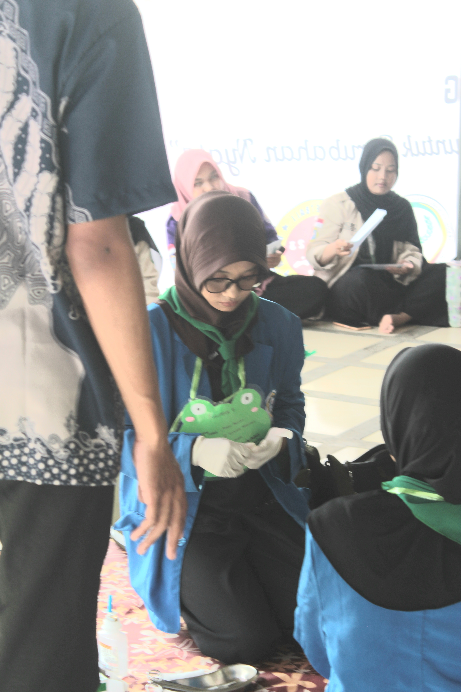

Halo! Saya Aleysa, mahasiswi S1 Kesehatan Masyarakat di STIKes Widya Dharma Husada Tangerang yang saat ini sedang menempuh semester 2. Saya punya ketertarikan besar di dunia kesehatan masyarakat, mulai dari bagaimana mengelola administrasi layanannya hingga cara mengedukasi warga agar lebih peduli kesehatan. Sebagai pribadi yang komunikatif, disiplin, dan bertanggung jawab, saya selalu bersemangat untuk terus belajar hal baru—baik secara akademik maupun praktik di lapangan. Lewat portofolio ini, saya ingin membagikan proses belajar dan kontribusi nyata yang bisa saya berikan untuk lingkungan sekitar.
Institusi
STIKes WDH
Prodi
Kesmas
Semester
2 (Dua)
Status
Mahasiswi Aktif
AA
Public Health Student
Pendidikan
Latar belakang pendidikan formal akademik dan vokasional medis dari jenjang dasar hingga saat ini.
S1 Kesehatan Masyarakat
STIKes Widya Dharma Husada Tangerang
Asisten Keperawatan
SMKI Insan Mulia
SMP Mutiara Insani Islamic School
Pendidikan Menengah Pertama
SDN Cihuni 2
Pendidikan Dasar
Karya & Proyek Akademik
Representasi tugas ilmiah, analisis data, dan produk promosi kesehatan yang dikembangkan selama masa perkuliahan Kesehatan Masyarakat.
Total Proyek Ilmiah
Analisis Strategi Digital Edukasi Pencegahan Stunting pada Gen-Z
Mini-research yang merancang model kampanye media sosial interaktif untuk meningkatkan kesadaran remaja putri mengenai anemia dan dampaknya pada stunting di masa depan.
Desain Infografis Interaktif: Rantai Penularan Demam Berdarah Dengue (DBD)
Pengembangan media KIE visual berbasis vektor untuk mempermudah masyarakat awam memahami siklus hidup nyamuk Aedes Aegypti dan metode pemberantasan sarang nyamuk (PSN) 3M Plus.
Visualisasi & Analisis Tren Distribusi Penyakit Menular Berbasis Excel
Pengolahan data sekunder kasus Influenza tingkat kecamatan menggunakan Pivot Table dan grafik distribusi frekuensi untuk menguji ketepatan interpretasi epidemiologi dasar.
Laporan Observasi Sistem Pembuangan Sampah Domestik di Pemukiman Padat
Studi lapangan berskala kecil yang meneliti korelasi antara perilaku pengelolaan sampah rumah tangga warga dengan risiko penularan penyakit berbasis lingkungan di sekitar bantaran sungai.
Critical Review: Efektivitas Regulasi Kawasan Tanpa Rokok (KTR) di Sektor Publik
Telaah kritis terhadap beberapa jurnal nasional guna mengevaluasi implementasi, tantangan penegakan hukum, serta tingkat kepatuhan masyarakat terhadap aturan bebas asap rokok.
Pengalaman Kerja Lapangan
Rekam jejak praktik klinis terstruktur di berbagai instansi medis dan faskes kesehatan.
Asisten Perawat
Maret 2024RS Islam Asshobirin, Tangerang Selatan
Membantu pelayanan ruang rawat inap dan UGD, pemeriksaan tanda vital, perawatan dan pelepasan infus, perawatan luka, serta patuh terhadap SOP dan standar PPI.
Asisten Perawat
April 2024Puskesmas Kelapa Dua, Kabupaten Tangerang
Membantu penanganan gawat darurat dasar, pemeriksaan tanda vital dasar, input data administrasi pasien, edukasi kesehatan, serta membantu operasional apotek dan laboratorium.
Asisten Perawat
Januari 2024Klinik Karawaci Medika, Kota Tangerang
Membantu manajemen administrasi pasien, memberikan dukungan pelayanan medis klinik umum dan klinik gigi, serta menangani perawatan luka dan infus dasar.
Asisten Apoteker
November 2023Apotek Keyla Medika 2, Legok
Membantu proses peracikan dan pengambilan obat sesuai resep, pencatatan data transaksi penjualan, and berpartisipasi aktif dalam kegiatan stock opname rutin.
Pengalaman Organisasi
Keterlibatan aktif dalam lingkup organisasi kemahasiswaan dan kesiswaan.
Himpunan Mahasiswa Jurusan (HMJ) Kesmas
Departemen Keorganisasian
Berperan aktif dalam menyusun program kerja himpunan, koordinasi antar anggota, serta sukses menjadi bagian dari panitia pelaksana Seminar "Bisik Minat".
OSIS SMKI Insan Mulia
Bidang Kesehatan, Jasmani, Olahraga, dan Gizi
Mengelola kegiatan internal sekolah bertema kesehatan dan olahraga, mengoordinasikan LDKS, serta berkontribusi sebagai panitia Hari Guru dan Public Speaking.
Keahlian & Kompetensi
Kompetensi klinis dasar serta kapasitas analitis di ruang lingkup kesehatan.
Kompetensi Teknis (Hard Skill)
- Administrasi pelayanan kesehatan & faskes
- Input & pengolahan data kesehatan digital
- Rekam medis dasar (coding ICD-10 & filing)
- Pemeriksaan tanda-tanda vital (TTV) dasar
- Dasar PPI (Pencegahan Infeksi) dan K3 medis
Sikap Kerja (Soft Skill)
Kemampuan Bahasa
Indonesia (Aktif) | Inggris (Pasif)
Sertifikasi, Kepanitiaan & Seminar
Dokumentasi kualifikasi resmi, kontribusi aktif, dan pengembangan diri profesional.
Sertifikasi & Kepanitiaan
Panitia: Pengabdian Masyarakat AMERTA (Aksi Masyarakat Sehat Berkelanjutan)
HMJ Kesehatan Masyarakat · Tema: "Amerta Young Guard: Kolaborasi Siswa dalam Pencegahan Rokok dan NAPZA"
5 Juni 2026 · STIKes Widya Dharma Husada, Tangerang
Panitia: BiSIK MINAT (Bincang Asik Peminatan)
Himpunan Mahasiswa Program Studi S1 Kesehatan Masyarakat · 2026
STIKes Widya Dharma Husada, Tangerang
Latihan Dasar Kepemimpinan Organisasi (LDKO)
Himpunan Mahasiswa/i Jurusan Kesehatan Masyarakat · Periode 2025-2026
STIKes Widya Dharma Husada, Tangerang
Latihan Dasar Kepemimpinan Organisasi (LDKS)
OSIS SMKI Insan Mulia · Periode 2023-2024
SMKI Insan Mulia, Tangerang
Latihan Dasar Kepemimpinan Organisasi (LDKS)
OSIS SMKI Insan Mulia · Periode 2022-2023
SMKI Insan Mulia, Tangerang
Seminar & Webinar
Peserta: [Judul Seminar/Webinar 1]
[Nama Penyelenggara/Universitas] · [Tahun]
Peserta: [Judul Seminar/Webinar 2]
[Nama Penyelenggara/Universitas] · [Tahun]
Peserta: [Judul Seminar/Webinar 3]
[Nama Penyelenggara/Universitas] · [Tahun]
Galeri Aktivitas & Pencapaian
Seluruh dokumentasi visual kegiatan akademik, praktik lapangan, organisasi, dan prestasi sesuai rekam data asli.
.jpeg)
Panitia Seminar Bisik Minat
HMJ KESMAS STIKES WDHMenjadi bagian dari kepanitiaan Seminar Bisik Minat (Bincang Asik Peminatan) memberikan pengalaman berharga bagi saya dalam bekerja sama dan berkontribusi dalam kegiatan edukatif. Melalui kegiatan bertema “Menggali Potensi dan Minat Diri sebagai Langkah Awal Menentukan Peminatan”, saya ikut berperan dalam mendukung kelancaran acara agar dapat memberikan information serta wawasan yang bermanfaat bagi seluruh peserta Program Studi S1 Kesehatan Masyarakat.

Simulasi Penanganan Kegawatdaruratan: Penatalaksanaan Perdarahan
HMJ KESMAS STIKES WDHDemonstrasi teknis penanganan awal kegawatdaruratan pada kasus perdarahan akut dalam kegiatan LDKO (Latihan Dasar Kepemimpinan Organisasi) Himpunan Mahasiswa. Kegiatan ini berfokus pada penerapan teknik pembalutan yang cepat dan tepat untuk membantu mengendalikan perdarahan serta meminimalkan risiko syok hipovolemik sebelum korban mendapatkan penanganan di fasilitas kesehatan.

Lulusan Terbaik Non-Akademik Angkatan 4
SMKI Insan MuliaMeraih penghargaan sebagai Lulusan Terbaik Non-Akademik di bidang seni dan olahraga, khususnya pencak silat atas dedikasi, prestasi, dan kontribusi aktif selama menempuh pendidikan di SMKI Insan Mulia. Penghargaan ini menjadi bentuk apresiasi atas semangat disiplin, sportivitas, serta komitmen dalam mengembangkan kemampuan dan melestarikan seni bela diri tradisional Indonesia.

Juara 2 Kategori Poomsae Taekwondo
SMKI Insan MuliaKejuaraan Resmi Piala Bupati Tangerang menjadi pengalaman berharga bagi saya dalam mengembangkan kemampuan di bidang taekwondo. Melalui latihan, disiplin, dan kerja keras, saya berhasil meraih Juara 2 kategori Poomsae sekaligus mendapatkan banyak pelajaran tentang konsistensi, kepercayaan diri, dan sportivitas.

Panitia Peringatan Hari Guru
OSIS SMKI Insan MuliaMenjadi bagian dari panitia peringatan Hari Guru memberikan pengalaman berharga bagi saya dalam bekerja sama, berkoordinasi, dan bertanggung jawab dalam sebuah kegiatan sekolah. Melalui kegiatan ini, saya ikut terlibat dalam proses persiapan hingga pelaksanaan acara sebagai bentuk apresiasi kepada para guru yang telah memberikan ilmu dan inspirasi.

LDKS 2023
OSIS SMKI Insan MuliaMengikuti kegiatan Latihan Dasar Kepemimpinan Siswa (LDKS) menjadi pengalaman yang membantu saya dalam mengembangkan jiwa kepemimpinan, kerja sama, dan tanggung jawab sebagai bagian dari struktural angkatan. Kegiatan ini memberikan banyak pembelajaran tentang kedisiplinan, komunikasi, serta pentingnya membangun karakter dan solidaritas dalam organisasi.

PKL Asisten Guru TK (Taman Kanak-Kanak)
TK Al-Husna, Curug TangerangKegiatan PKL di Taman Kanak-Kanak menjadi pengalaman berharga bagi saya dalam berinteraksi langsung dengan anak usia dini melalui pendekatan edukatif dan menyenangkan. Melalui program pengenalan kesehatan dasar, saya belajar membangun komunikasi yang baik, meningkatkan kepedulian, serta memberikan edukasi sederhana dengan cara yang mudah dipahami oleh anak-anak.

PKL Panti Werdha Kasih Ayah Bunda
Panti Werdha Kasih Ayah Bunda, Karawaci TangerangKegiatan PKL di Panti Werdha Kasih Ayah Bunda memberikan pengalaman berharga bagi saya dalam memahami pentingnya kepedulian dan pelayanan terhadap lansia. Melalui kegiatan asuhan keperawatan gerontik, pendampingan sosial, serta pengecekan kesehatan rutin, saya belajar membangun empati, komunikasi, dan tanggung jawab dalam memberikan perhatian serta dukungan kepada para lansia secara langsung.

PKL di RS Islam Asshobirin
RS Islam Asshobirin Tangerang SelatanKegiatan PKL di RS Islam Asshobirin menjadi pengalaman berharga bagi saya dalam mengenal dunia pelayanan kesehatan secara langsung. Melalui praktik di bidang asisten keperawatan, rekam medis, dan pelayanan rawat inap, saya belajar menerapkan kompetensi vokasional, meningkatkan ketelitian, membangun komunikasi yang baik, serta memahami pentingnya profesionalisme dan kerja sama dalam lingkungan fasilitas kesehatan.

PKL di RS Islam Asshobirin
RS Islam Asshobirin Tangerang SelatanKegiatan PKL di RS Islam Asshobirin memberikan pengalaman berharga bagi saya dalam memahami penerapan Pemenuhan Kebutuhan Dasar Manusia (KDM) serta asuhan keperawatan dasar pada anak dan neonatus. Melalui kegiatan ini, saya belajar meningkatkan ketelitian, kepedulian, dan keterampilan dasar keperawatan dalam memberikan pelayanan serta pendampingan kepada pasien dengan penuh tanggung jawab dan empati.

Penampil Atraksi Silat Pelepasan Siswa/i Angkatan ke-3
SMKI Insan MuliaMenjadi bagian dari performance atraksi silat pada acara pelepasan siswa/i Angkatan ke-3 SMKI Insan Mulia merupakan pengalaman yang membanggakan bagi saya. Penampilan ini menjadi kesempatan untuk menunjukkan keterampilan, kekompakan, serta semangat dalam melestarikan seni bela diri tradisional Indonesia melalui sebuah pertunjukan budaya di momen perpisahan sekolah.

OSIS-MPK SMKI Insan Mulia Periode 2023/2024
OSIS SMKI Insan MuliaMenjadi bagian dari jajaran pengurus aktif OSIS dan Majelis Perwakilan Kelas (MPK) memberikan pengalaman berharga bagi saya dalam belajar kepemimpinan, tanggung jawab, serta kerja sama dalam organisasi sekolah. Melalui kebersamaan dan koordinasi antar pengurus, saya memperoleh banyak pelajaran tentang komunikasi, solidaritas, dan kontribusi aktif dalam mendukung berbagai kegiatan sekolah.

Penampil Atraksi Silat Pelantikan Fakultas Baru di UNIMAR
Fakultas Teknik UNIMARMenjadi bagian dari penampil atraksi silat pada ceremonial pembukaan Fakultas Teknik di UNIMAR merupakan pengalaman yang berkesan bagi saya. Melalui demonstrasi jurus seni Tapak Suci, saya berkesempatan menampilkan keterampilan, kekompakan, serta semangat dalam melestarikan seni bela diri tradisional Indonesia sebagai bagian dari pertunjukan budaya dalam acara resmi kampus.

Panitia Acara Public Speaking SMK
OSIS SMKI Insan MuliaMenjadi bagian dari panitia acara Public Speaking SMK memberikan pengalaman berharga bagi saya dalam mengelola kegiatan edukatif dan bekerja sama dalam tim. Melalui kegiatan ini, saya ikut berkontribusi dalam pengelolaan teknis lokakarya yang bertujuan meningkatkan kemampuan komunikasi dan keterampilan berbicara di depan umum bagi para siswa.

Juara 1 Banten National Challenge 1 2024
Tapak Suci Muhammadiyah PagedanganMeraih Juara 1 dan Medali Emas pada ajang Banten National Challenge 1 2024 menjadi pengalaman yang sangat berharga bagi saya dalam perjalanan di dunia pencak silat. Bersama Tapak Suci Muhammadiyah Pagedangan, saya belajar tentang disiplin, kerja keras, konsistensi latihan, serta pentingnya menjaga sportivitas dan semangat juang dalam setiap pertandingan. Prestasi ini menjadi motivasi bagi saya untuk terus berkembang dan membawa pencak silat sebagai bagian dari kebanggaan budaya Indonesia.

LDKS Periode 2023/2024
OSIS SMKI Insan MuliaKegiatan LDKS Periode 2023/2024 menjadi pengalaman berharga bagi saya dalam memperkuat kemampuan kepemimpinan, kerja sama, dan komunikasi organisasi. Melalui koordinasi lanjutan serta pembekalan materi manajerial OSIS/MPK, saya memperoleh banyak pembelajaran tentang tanggung jawab, pengambilan keputusan, dan pentingnya membangun solidaritas dalam sebuah kepengurusan.

Latihan silat di Tapak Suci Muhammadih Pagedangan
Tapak Suci Muhammadiyah PagedanganMengikuti latihan silat di Tapak Suci Muhammadih Pagedangan menjadi bagian penting dalam perjalanan saya mengembangkan kemampuan bela diri, kedisiplinan, dan mental yang kuat. Melalui latihan yang rutin dan konsisten, saya belajar tentang teknik, ketekunan, sportivitas, serta nilai-nilai persaudaraan dan semangat dalam melestarikan seni bela diri tradisional Indonesia.

Osis SMK Periode 2022/2023
OSIS SMKI Insan MuliaPeriode kepengurusan OSIS 2022/2023 menjadi awal perjalanan saya dalam mengenal dunia organisasi dan manajemen program kerja di lingkungan sekolah. Melalui berbagai kegiatan dan koordinasi bersama pengurus lainnya, saya belajar membangun tanggung jawab, komunikasi, serta kemampuan bekerja sama dalam menjalankan program kesehatan jasmani dan kegiatan sekolah secara aktif.

Panitia Hari Guru OSIS Periode 2023/2024
OSIS SMKI Insan MuliaMenjadi bagian dari panitia peringatan Hari Guru bersama rekan pengurus OSIS memberikan pengalaman berharga bagi saya dalam bekerja sama, berkoordinasi, dan bertanggung jawab dalam sebuah kegiatan sekolah. Melalui kegiatan ini, saya ikut berkontribusi dalam menyukseskan acara sebagai bentuk apresiasi dan penghormatan kepada para guru atas dedikasi dan jasa mereka dalam dunia pendidikan.
 Organisasi
Organisasi
Hari Guru Osis Periode 2023/2024
OSIS SMKI Insan MuliaMenjadi bagian dari kepanitiaan peringatan Hari Guru bersama pengurus OSIS memberikan pengalaman berharga bagi saya dalam bekerja sama dan berkontribusi dalam kegiatan sekolah. Melalui kegiatan ini, saya ikut terlibat dalam proses persiapan hingga pelaksanaan acara sebagai bentuk apresiasi dan penghormatan kepada para guru atas dedikasi serta jasa mereka dalam dunia pendidikan.
Praktik Pemeriksaan Darah sebagai Asisten Keperawatan
SMKI Insan MuliaKegiatan praktik pemeriksaan darah memberikan pengalaman langsung bagi saya dalam mempelajari prosedur pengambilan dan pemeriksaan sampel darah sebagai bagian dari kompetensi dasar asisten keperawatan. Melalui praktik ini, saya belajar meningkatkan ketelitian, menjaga sterilitas tindakan, memahami prosedur pemeriksaan dengan baik, serta melatih kesiapan dan tanggung jawab dalam melakukan pelayanan kesehatan dasar secara profesional.

Asisten Pelatih Taekwondo di SMP Insan Kamil Legok
SMP Insan Kamil Legok, TangerangMenjadi asisten pelatih taekwondo di SMP Insan Kamil Legok memberikan pengalaman berharga bagi saya dalam membimbing, melatih, dan berbagi pengetahuan kepada para siswa. Melalui kegiatan ini, saya belajar membangun komunikasi yang baik, meningkatkan rasa tanggung jawab, serta membantu mengembangkan disiplin, teknik dasar, dan semangat sportivitas dalam olahraga taekwondo.

Pelantikan OSIS Periode 2022/2023
OSIS SMKI Insan MuliaMengikuti prosesi pelantikan OSIS menjadi momen berharga bagi saya dalam memulai tanggung jawab sebagai bagian dari kepengurusan organisasi. Kegiatan ini menjadi simbol komitmen, kesiapan, dan amanah untuk menjalankan tugas dengan disiplin, kerja sama, serta semangat berkontribusi bagi lingkungan sekolah.

LDKS 2022/2023
OSIS SMKI Insan MuliaKegiatan LDKS menjadi pengalaman yang membentuk kedisiplinan, mental, serta kemampuan bekerja sama dalam organisasi. Melalui berbagai latihan fisik dasar dan pembinaan kepemimpinan, saya belajar tentang tanggung jawab, ketahanan diri, komunikasi, dan pentingnya menjaga solidaritas dalam menjalankan peran sebagai bagian dari organisasi sekolah.